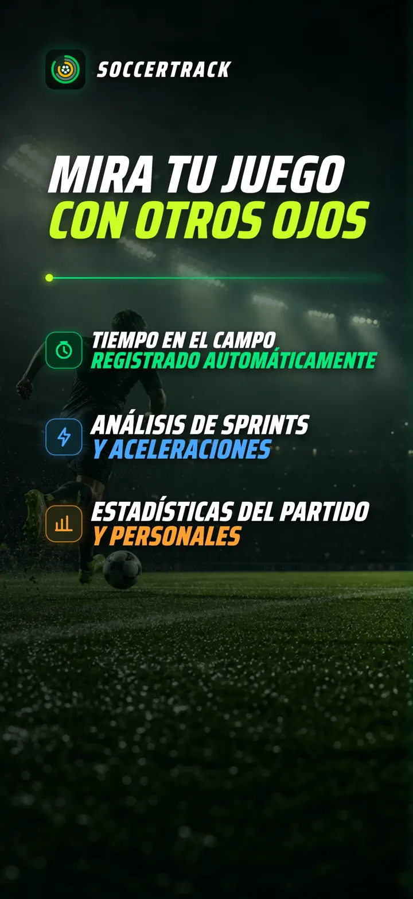
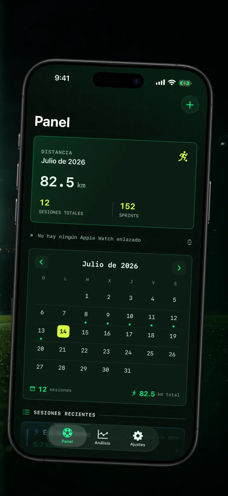
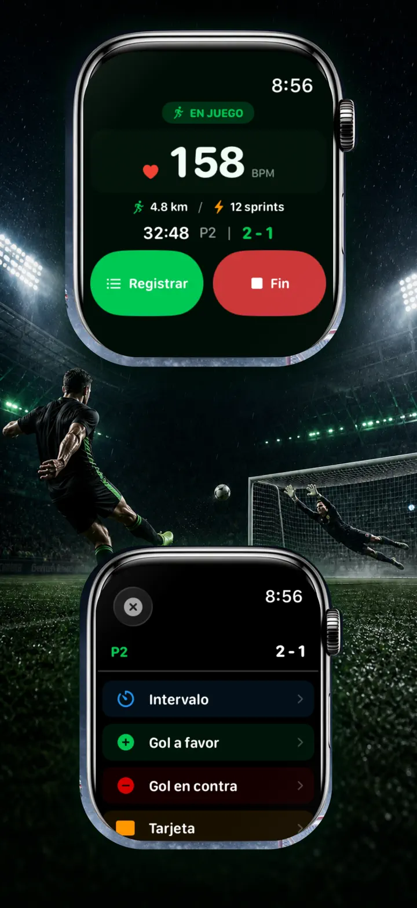
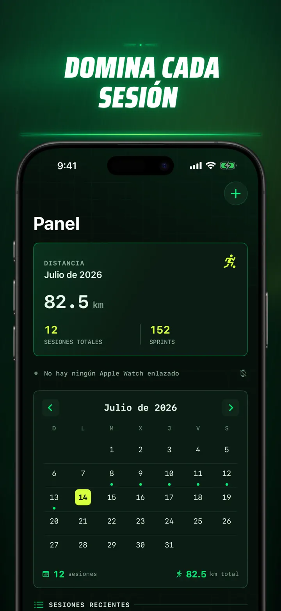
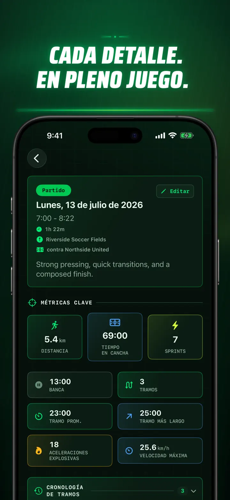
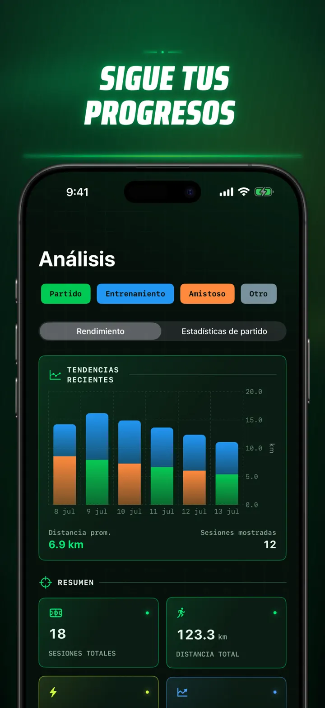
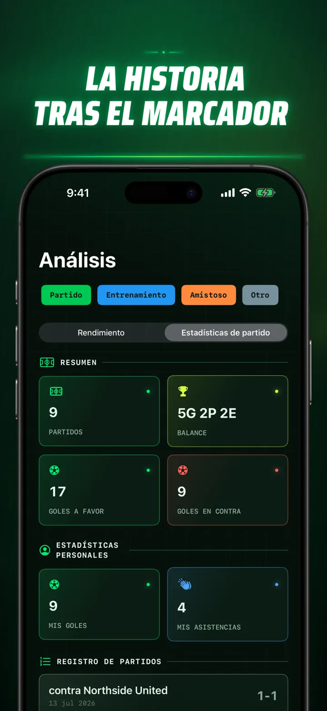
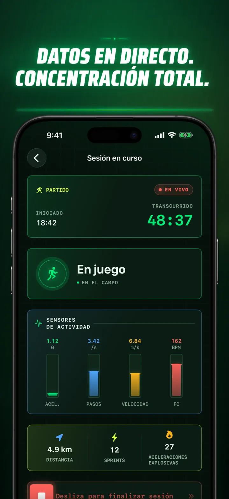
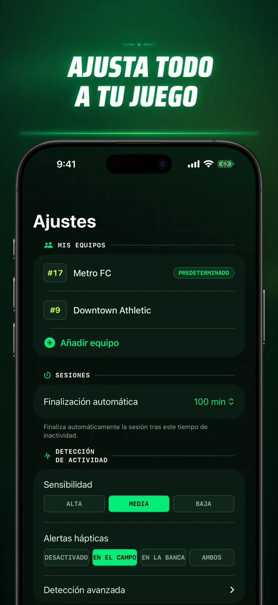
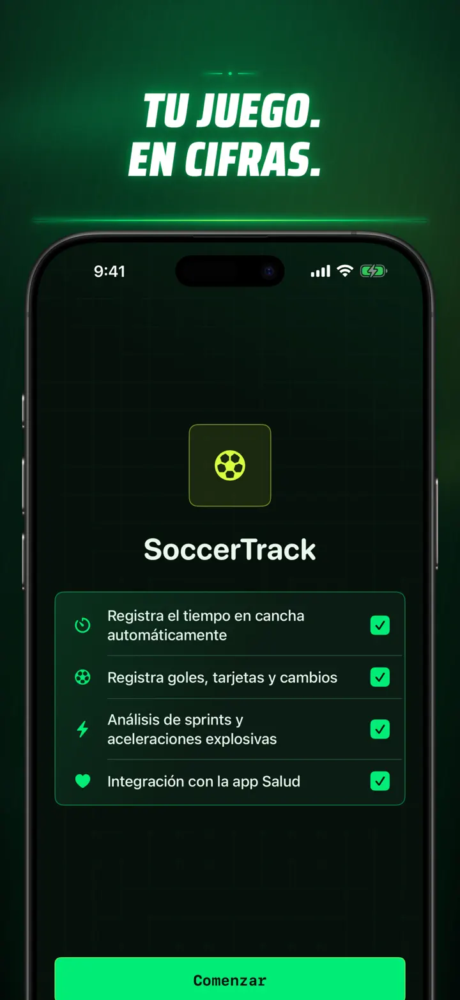

Soccer Time Track
Minutos y análisis de fútbol
Inicia una sesión y juega. Apple Watch separa automáticamente el tiempo en el campo del banquillo y registra métricas en directo, sprints, eventos y tendencias.
Descargar en App Store
Acerca de la app
Mira tu partido de otra manera.
Soccer Time Track convierte el Apple Watch en un asistente de partido para futbolistas que quieren entender mucho más que el resultado final. Empieza desde la muñeca, céntrate en jugar y consulta después en el iPhone una imagen completa de tu rendimiento.
TIEMPO EN EL CAMPO, AUTOMÁTICAMENTE
Descubre cuándo estuviste realmente en juego. Las señales de movimiento, entrenamiento y ubicación ayudan a diferenciar los periodos activos, de baja actividad y en el banquillo. Obtendrás:
- Tiempo en el campo y en el banquillo
- Periodos de juego y una cronología clara de la sesión
- Un desglose detallado de cómo transcurrió tu actividad
EL PARTIDO, DESDE TU MUÑECA
Elige Partido, Entrenamiento, Amistoso u Otro. Mientras juegas, registra:
- Goles a favor y en contra
- Tus goles y asistencias
- Tarjetas amarillas y rojas
- Sustituciones y cambios de periodo
TU RENDIMIENTO, MEDIDO
Ve más allá de los minutos con métricas como:
- Distancia
- Velocidad media y máxima
- Sprints y esfuerzos de alta intensidad
- Frecuencia cardiaca y calorías activas
- Cadencia y aceleración
DATOS EN DIRECTO, MÁXIMA CONCENTRACIÓN
Un iPhone enlazado puede mostrar las métricas en directo mientras el Apple Watch mantiene el entrenamiento activo. Tú te concentras en el partido y los datos se registran en segundo plano.
COMPRUEBA TU PROGRESO
Reúne partidos, entrenamientos, amistosos y otras sesiones en un mismo historial. Explora tendencias y récords personales, compara sesiones y añade equipo, dorsal, rival, ubicación y notas para conservar la historia de cada resultado.
¿Necesitas tus datos en otro lugar? Exporta sesiones, periodos de juego y eventos en formato CSV o JSON.
CREADO PARA APPLE WATCH Y APPLE HEALTH
Con tu permiso, Soccer Time Track utiliza datos de entrenamiento, frecuencia cardiaca, movimiento y ubicación para crear estadísticas y guardar los entrenamientos de fútbol completados en Apple Health. El seguimiento automático requiere un Apple Watch. También puedes añadir sesiones manualmente desde el iPhone.
TUS DATOS, TU PARTIDO
Tus sesiones permanecen en tus dispositivos y, si activas la sincronización con iCloud, en tu base de datos privada de iCloud. Soccer Time Track no requiere cuenta, no incluye publicidad ni utiliza analítica de terceros.
Deja de calcular cuánto has jugado. Empieza a ver qué hiciste con cada minuto.
Política de privacidad: https://masawata.net/SoccerTimeTrack/privacy-policy.html Términos del servicio: https://www.apple.com/legal/internet-services/itunes/dev/stdeula/
Capturas de pantalla









Soccer Time Track
Inicia una sesión y juega. Apple Watch separa automáticamente el tiempo en el campo del banquillo y registra métricas en directo, sprints, eventos y tendencias.
Descargar en App Store